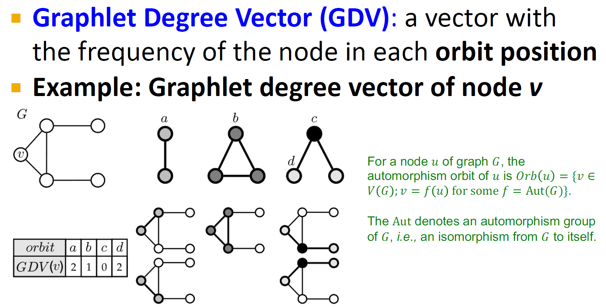

Structure Role in Network
子图是网络的Block
non-isomorphoic
两个图是同质的（isomorphoic）指的是两个图结构是一样的，只不过因为画出来在不同位置所以的看起来不一样
衡量的是结构等价性（structural equivalence）
简单的子图就是基底，如何定义基底motifs，然后把图表示转化为以子图为基底的特征表示
Graphlet用于描述节点的局部网络结构特征
Graphlets则表示了一个坐标系
将网络中的每个节点表示成graphlet degree vector

基底一共有四种，注意上图考虑了三个子图（subgraph、motifs）类型，但是有节点可能的角色有四种
把这个向量作为特征用于后续的任务
Graphlet degree vector提供了一种节点局部拓扑结构的衡量方法（a measure of a node's local network topology）
节点的角色和节点所在社区的概念区别：
Role：A collection of nodes which have similar positions in a network
角色指的是结构等价性（Strucrual equivalence）: 如果节点和节点所处的局部结构是一样的，they have the same relationships to all other nodes
RolX算法1
问题：在角色发现的时候，为什么不用grpahlet degree vector作为特征？
1. RoLX算法 ↩